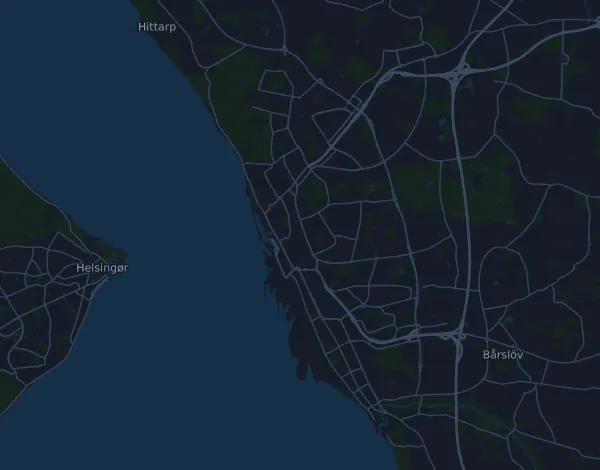

Helsingborg Marathon 42,3 km
- Distans
- 42,3 km
- Höjdmeter
- ↑ 184 m
- Högsta punkt
- 52 m ö.h.
- Underlag
- Väg
- Karaktär
- Flack
- Start
- kl. 10:00
- Vätskekontroller
- 12
Höjdprofil
Förbered dig med Mila
Mila är en löpcoach i appen. Lägger du till ett lopp i din plan planerar coachen veckorna fram till start efter din form, och ger dig en tidsprognos och en plan för tempo, vätska och energi på banan.

Rätt pass. Rätt dag.
Banan

Om banan
Helsingborg Marathon är en snabb och nästan platt bana: 184 höjdmeter upp och 186 ned på 42,3 km, mellan 1 och 52 meter över havet. Klättringarna är långa men mycket flacka. Den största börjar vid km 5,7 och ger 38 meter på drygt 6 km, ungefär 0,6 procent. Nästa kommer vid km 15,7 med 26 meter på knappt 3,5 km. Efter halvvägs ligger banan kvar på en platå runt 37–44 meter med små vågor. De sista dryga fyra kilometrarna går sedan ner ett 40-tal meter till målet.
Banan belönar jämnt tempo och tålamod. Stigningarna är så svaga att det är lätt att pressa farten i dem, så styr på ansträngning och puls där. Bygg träningen kring växande långpass, troligen på asfalt som loppet, med partier i tänkt maratonfart sent i passen. Lägg till tröskelpass för uthållig fart och öva på att få i dig energi under löpningen. Avsluta gärna några långpass med lätt nedförslöpning, så att låren klarar den avslutande utförsbacken.
Beskrivningen är skriven av Milas coach utifrån banans data.
Klättringar
| Börjar vid | Längd | Höjdmeter | Lutning | Topp (m ö.h.) |
|---|---|---|---|---|
| km 5,7 | 6,2 km | 38 m | 0,6 % | 44 |
| km 15,7 | 3,4 km | 26 m | 0,7 % | 49 |
Inför start
Vätskekontroller
| Vid | Här finns |
|---|---|
| km 3,1 | vatten, sportdryck |
| km 6,7 | vatten, sportdryck, mat |
| km 10,1 | vatten, sportdryck |
| km 13,1 | vatten, sportdryck |
| km 16,6 | vatten, sportdryck, mat |
| km 20,1 | vatten, sportdryck |
| km 23,4 | vatten, sportdryck, mat |
| km 25,7 | vatten, sportdryck |
| km 29,9 | vatten, sportdryck, mat, salt |
| km 32,3 | vatten, sportdryck |
| km 36,8 | vatten, sportdryck, mat |
| km 39,9 | vatten, sportdryck, mat |
Starttider
- kl. 10:00
Källa: helsingborgmarathon.se, hämtat 15 oktober 2026
Tempotabell
Helsingborg Marathon 42,3 km på 3:00:00 – tid per km och mellantider
4:15 per km · km 10: 42:34 · km 21,1: 1:29:50 · km 30: 2:07:43 · km 40: 2:50:18 · mål: 3:00:00
Helsingborg Marathon 42,3 km på 3:30:00 – tid per km och mellantider
4:58 per km · km 10: 49:40 · km 21,1: 1:44:48 · km 30: 2:29:00 · km 40: 3:18:41 · mål: 3:30:00
Helsingborg Marathon 42,3 km på 4:00:00 – tid per km och mellantider
5:41 per km · km 10: 56:46 · km 21,1: 1:59:46 · km 30: 2:50:18 · km 40: 3:47:03 · mål: 4:00:00
Helsingborg Marathon 42,3 km på 4:30:00 – tid per km och mellantider
6:23 per km · km 10: 1:03:52 · km 21,1: 2:14:45 · km 30: 3:11:35 · km 40: 4:15:26 · mål: 4:30:00
Tiderna förutsätter jämnt tempo hela vägen. Det är ren räkning, ingen prognos: i backar, i trängsel och vid vätskekontroller varierar tempot.
Vanliga frågor
När går Helsingborg Marathon 42,3 km?
Helsingborg Marathon 42,3 km går lördag 4 september 2027. Kontrollera datum och starttid hos arrangören.
Vilken tid startar Helsingborg Marathon 42,3 km?
Enligt arrangören: kl. 10:00.
Hur lång är Helsingborg Marathon 42,3 km och hur många höjdmeter är det?
Loppet är 42,3 km långt med 184 höjdmeter uppför och 186 nedför. Högsta punkten ligger 52 m ö.h.
Hur ser banan på Helsingborg Marathon 42,3 km ut?
Banan räknas som flack, med 4,4 höjdmeter per km i snitt. Den har 2 klättringar på minst 25 höjdmeter; den största börjar vid km 5,7: 38 höjdmeter på 6,2 km. Banan går från start till ett mål på en annan plats. Underlaget är väg.
Finns det vätskekontroller på Helsingborg Marathon 42,3 km?
Ja. Arrangören har 12 vätskekontroller: km 3,1 (vatten, sportdryck); km 6,7 (vatten, sportdryck, mat); km 10,1 (vatten, sportdryck); km 13,1 (vatten, sportdryck); km 16,6 (vatten, sportdryck, mat); km 20,1 (vatten, sportdryck); km 23,4 (vatten, sportdryck, mat); km 25,7 (vatten, sportdryck); km 29,9 (vatten, sportdryck, mat, salt); km 32,3 (vatten, sportdryck); km 36,8 (vatten, sportdryck, mat); km 39,9 (vatten, sportdryck, mat).
Hur lägger jag upp farten på Helsingborg Marathon 42,3 km?
Sikta på en jämn ansträngning hela vägen, och håll igen de första kilometrarna när benen känns pigga och fältet drar iväg. Banan är flack, så ett jämnt tempo per kilometer fungerar bra. I Mila får du en tempoplan för just den här banan efter din egen form.
Fler lopp som det här
Fler lopp i närheten
- Midnattsloppet Malmö 10 km28 augusti 2027 · Malmö, Sverige
- Stockholm Halvmaraton 21 km21 augusti 2027 · Stockholm, Sverige
- Fjällmaraton Sälen 42 km21 augusti 2027 · Sälen (Lindvallen, Experiumtorget), Sverige
- Midnattsloppet Göteborg 10 km21 augusti 2027 · Göteborg, Sverige
- Trailvasan 3021 augusti 2027 · Oxberg, Sverige
- Ultravasan 45 43,8 km21 augusti 2027 · Oxberg, Sverige
Förbered dig med Mila
Rätt pass. Rätt dag.
Uppgifterna kommer ur banfilen och arrangörens information. Kontrollera datum, starttider och regler hos arrangören.
Mila är inte kopplad till, sponsrad av eller godkänd av arrangören eller loppets sponsorer. Namn och varumärken tillhör sina ägare. Arrangör eller rättighetsinnehavare? Begär ändring eller borttagning